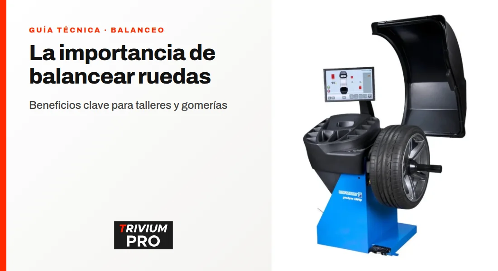

El balanceado de ruedas es un servicio fundamental que todo taller automotriz y gomería debe ofrecer. Más allá de ser un simple complemento a la venta de neumáticos, esta operación técnica tiene profundas implicaciones en la seguridad vial, la vida útil de los componentes del vehículo y la satisfacción del cliente. En este artículo, analizaremos por qué el balanceo de ruedas es esencial y los múltiples beneficios que aporta contar con una balanceadora profesional en su establecimiento.
¿Por qué es importante balancear las ruedas?
Seguridad vial optimizada
Las ruedas desbalanceadas generan vibraciones que pueden traducirse en una menor adherencia al camino, especialmente en condiciones climáticas adversas o durante frenadas de emergencia. Un vehículo con ruedas correctamente balanceadas mantiene un contacto más uniforme con el asfalto, mejorando significativamente el control del conductor y reduciendo los riesgos de accidentes.
Mayor vida útil de los neumáticos
Cuando una rueda no está balanceada, ciertas áreas del neumático soportan mayor presión que otras durante el rodaje. Esta distribución desigual del peso acelera el desgaste irregular, provocando que los neumáticos se deterioren prematuramente. Un balanceo adecuado puede extender la vida útil de los neumáticos hasta en un 20%, representando un ahorro considerable para los clientes.
Protección de la suspensión y dirección
Las vibraciones generadas por ruedas desbalanceadas someten a un estrés constante a los componentes de suspensión y dirección. Amortiguadores, rótulas, terminales y otros elementos se desgastan más rápidamente cuando deben compensar estas vibraciones continuamente. Un correcto balanceo reduce el estrés mecánico en estos sistemas, previniendo reparaciones costosas en el futuro.
Confort de marcha superior
Quizás el efecto más inmediatamente perceptible para los conductores es la mejora en el confort de marcha. Las vibraciones causadas por ruedas desbalanceadas son transmitidas al habitáculo, afectando la experiencia de conducción. Estas vibraciones pueden manifestarse en el volante, el piso del vehículo o incluso en los asientos, dependiendo de la velocidad y la magnitud del desbalance.
Ahorro en combustible
Las ruedas desbalanceadas requieren más energía para mantener su movimiento debido a la resistencia adicional generada por las vibraciones. Esto se traduce en un mayor consumo de combustible, que aunque puede parecer marginal en cada viaje, resulta significativo a lo largo del tiempo.
Beneficios de contar con una balanceadora en su taller o gomería
Servicio completo y profesional
Disponer de una balanceadora permite ofrecer un servicio integral a los clientes. En lugar de limitarse a vender o reparar neumáticos, su establecimiento puede proporcionar un servicio completo que abarca todas las necesidades relacionadas con las ruedas. Esto posiciona a su negocio como una solución profesional y completa.
Aumento de la rentabilidad
El balanceo de ruedas es un servicio de alto margen que puede incrementar significativamente los ingresos de su taller. Al ser un procedimiento relativamente rápido, permite atender a más clientes y maximizar la eficiencia operativa. Además, la inversión inicial en una balanceadora profesional se recupera rápidamente gracias al flujo constante de clientes que requieren este servicio.
Fidelización de la clientela
Ofrecer un servicio de balanceo preciso y eficiente contribuye a la satisfacción del cliente. Los conductores que experimentan un menor desgaste en sus neumáticos y un mayor confort de marcha tenderán a regresar para futuros servicios y recomendarán su taller a otros. Esta fidelización es clave para el crecimiento sostenido del negocio.
Diagnóstico preventivo
Durante el proceso de desmontaje y montaje necesario para el balanceo, los técnicos tienen la oportunidad de inspeccionar los neumáticos y detectar problemas incipientes como desgastes irregulares, cortes, protuberancias o daños en la banda de rodamiento. Esta detección temprana permite recomendar los servicios adecuados antes de que los problemas se agraven.
Ventaja competitiva
En un mercado altamente competitivo, contar con equipamiento moderno como una balanceadora de alta precisión establece una diferencia significativa frente a otros establecimientos. Las balanceadoras actuales, con tecnología computarizada y funciones avanzadas, permiten realizar procedimientos más precisos y educar al cliente sobre la importancia del servicio mediante interfaces visuales.
Reducción de reclamos y garantías
Un balanceo preciso minimiza las probabilidades de que los clientes regresen con quejas sobre vibraciones persistentes o desgaste prematuro de los neumáticos. Esto reduce los costos asociados a garantías y reparaciones sin cargo, protegiendo la rentabilidad del negocio.
Características a considerar al elegir una balanceadora
Precisión y tecnología
Las balanceadoras modernas ofrecen niveles de precisión excepcionales, con márgenes de error mínimos (algunos modelos alcanzan precisiones de hasta 1 gramo). Busque equipos con sensores precisos y algoritmos avanzados que garanticen resultados confiables en cada operación.
Facilidad de uso y eficiencia
La interfaz del usuario y la ergonomía del equipo son factores cruciales. Una balanceadora intuitiva reduce el tiempo de capacitación y minimiza los errores operativos. Las pantallas táctiles, los menús claros y los procesos guiados aumentan la productividad del taller.
Capacidad de diagnóstico
Algunas balanceadoras incorporan funciones de diagnóstico que van más allá del simple balanceo. Pueden detectar excentricidades, deformaciones en la llanta o problemas en el montaje del neumático, agregando valor al servicio ofrecido.
Versatilidad
La capacidad para atender diferentes tipos de ruedas, desde automóviles compactos hasta SUVs y vehículos comerciales ligeros, amplía el espectro de clientes potenciales. Las balanceadoras versátiles permiten trabajar con diversos tamaños de llantas y tipos de fijación.
Mantenimiento y soporte técnico
Un equipo confiable debe estar respaldado por un servicio técnico accesible y repuestos disponibles. Considere la reputación del fabricante y la calidad del soporte post-venta al momento de elegir su balanceadora.
Conclusión
Incorporar una balanceadora profesional en su taller o gomería no es simplemente una adición de equipamiento, sino una inversión estratégica que mejora la calidad del servicio, incrementa la rentabilidad y contribuye a la fidelización de los clientes.
El balanceo adecuado de ruedas trasciende el mero confort de marcha; es un componente fundamental de la seguridad vial, la eficiencia del vehículo y la economía del conductor. Al ofrecer este servicio con precisión y profesionalismo, su establecimiento se posiciona como un aliado confiable en el mantenimiento integral de los vehículos de sus clientes.
En un contexto donde cada vez más conductores comprenden la importancia del mantenimiento preventivo, contar con el equipamiento adecuado para satisfacer esta demanda es una decisión que impulsará el crecimiento sostenido de su negocio en el competitivo sector automotriz.